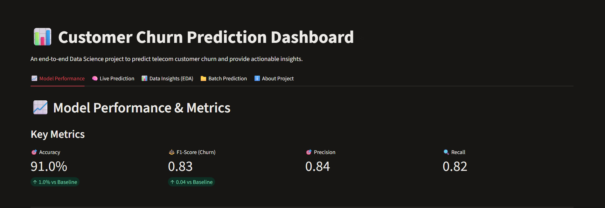
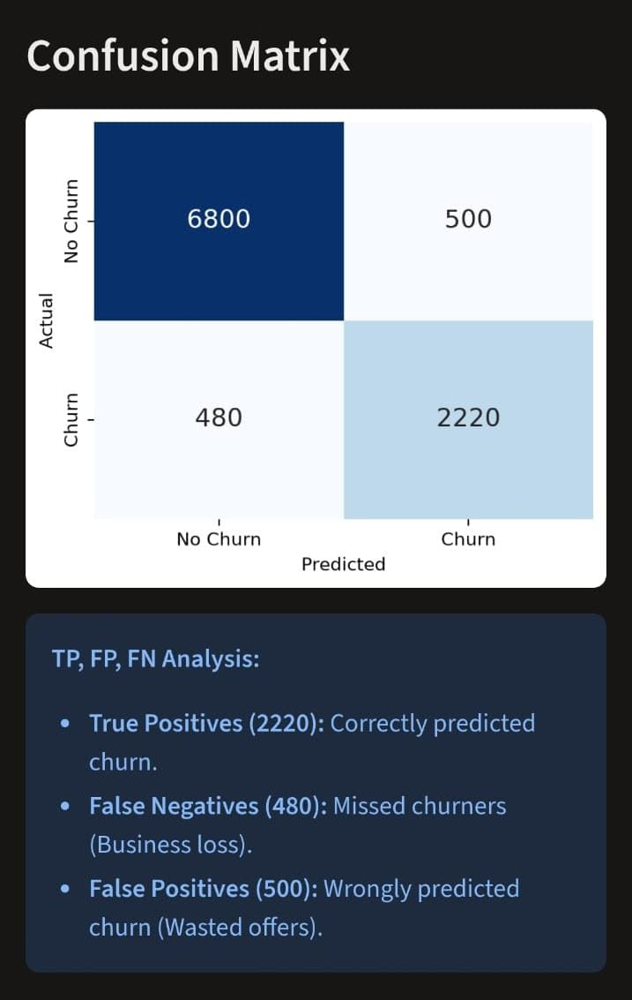
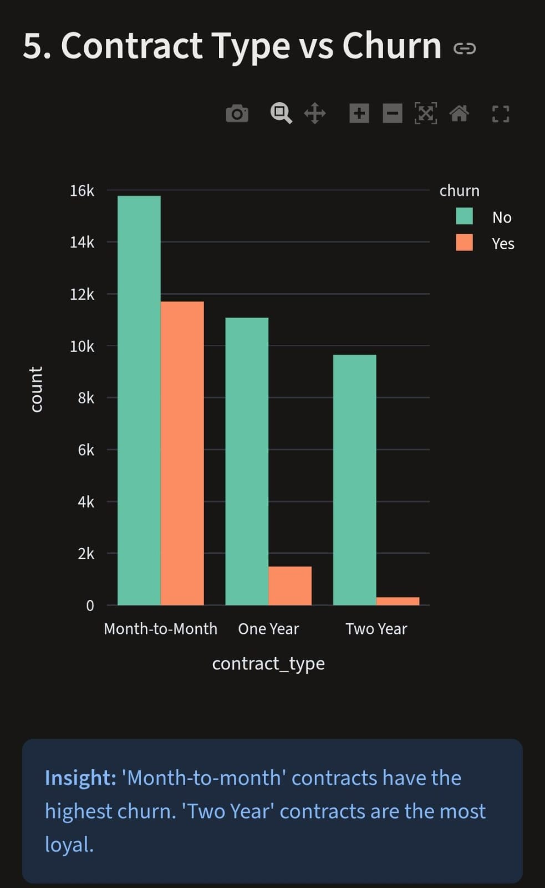
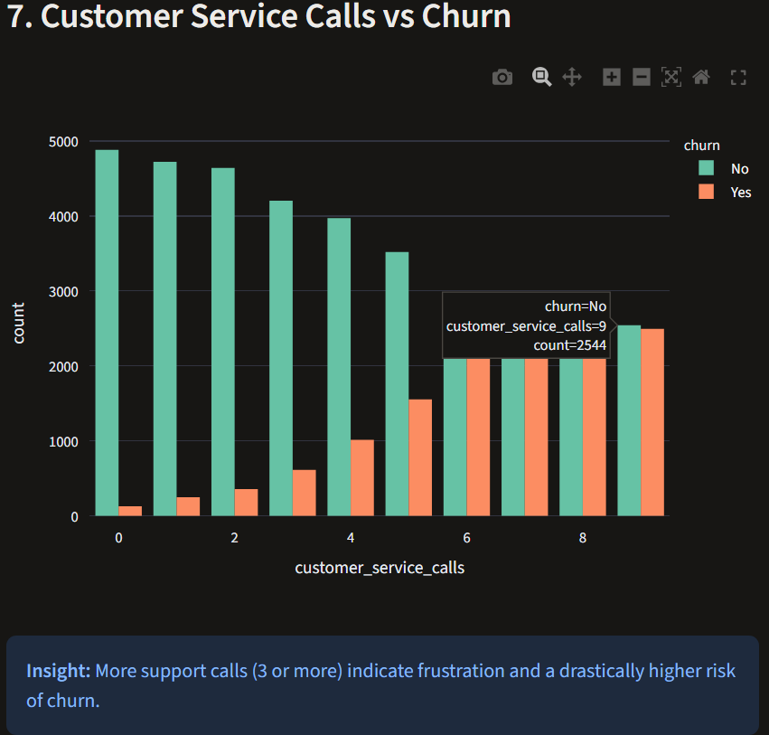
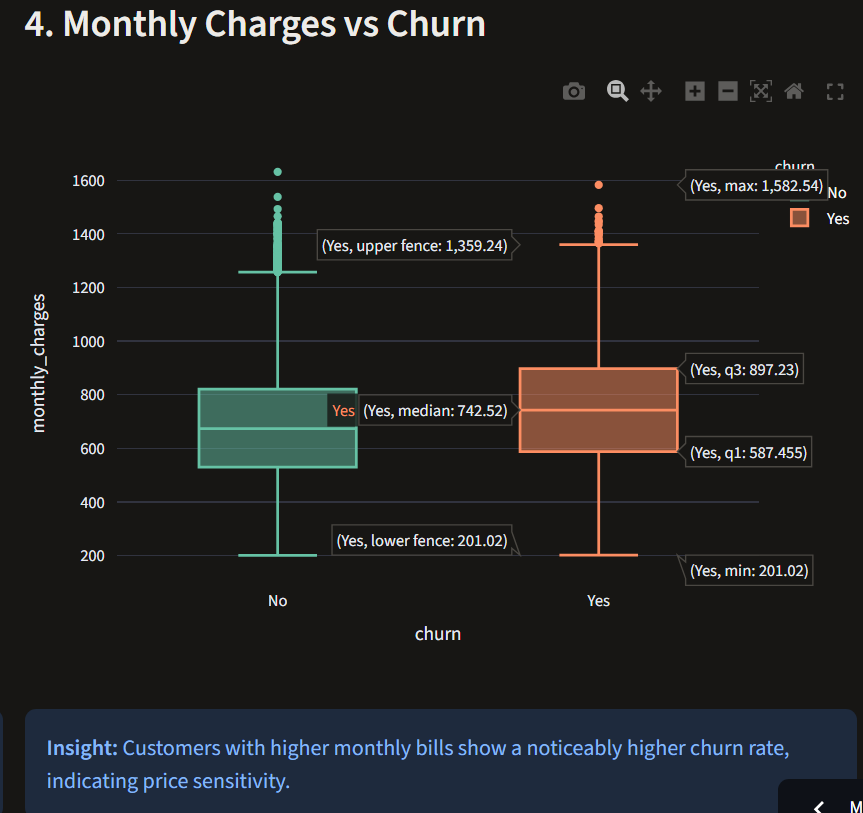
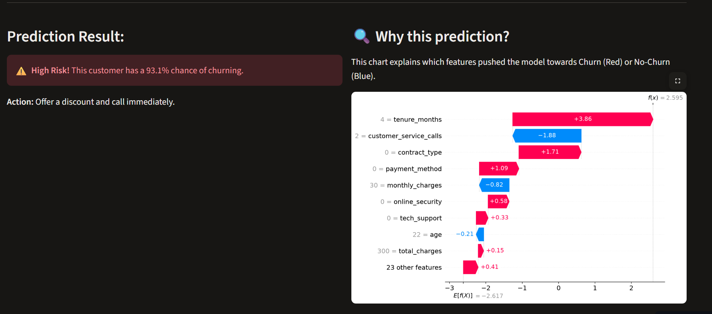

An interactive Machine Learning web application to predict telecom customer churn using LightGBM, SHAP, and Plotly. Built with Python and Streamlit.
Launch Live DashboardModel Accuracy
F1-Score
Records Trained
A quick look at the interactive visualizations and model performance.

LightGBM achieves 91% accuracy and 0.83 F1-score.

Detailed breakdown of True Positives and False Negatives.

Month-to-month contracts have the highest churn rate.

More support calls (3+) indicate high frustration and churn risk.

Customers with higher monthly bills show a higher churn rate.

Understand exactly which features pushed the model to predict high risk.